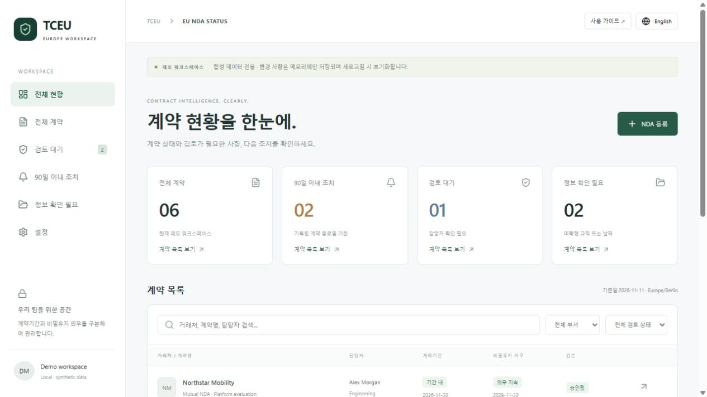

화면을 익히세요.
오른쪽 위 한국어 버튼으로 전환한 후, 전체 현황의 네 가지 요약을 확인합니다.
숫자의 의미 보기 ↗계약기간과 비밀유지 의무를 따로 보고,
확인이 필요한 계약부터 살펴보세요.
설치 없이 브라우저에서 · 한국어 / English · 합성 데이터 데모

현재는 체험용 초기 버전입니다. 실제 계약 정보는 입력하지 마세요. 변경은 현재 탭의 메모리에만 남고 새로고침하면 초기화됩니다. 승인도 데모 시뮬레이션입니다.
지원 범위 보기 ↗도구를 새 탭에 열고 가이드와 나란히 보세요.
로그인이나 파일 업로드 없이 시작합니다.
오른쪽 위 한국어 버튼으로 전환한 후, 전체 현황의 네 가지 요약을 확인합니다.
숫자의 의미 보기 ↗검색창에 Meridian을 입력하고 거래처 이름을 누르세요. 계약기간과 의무의 상태를 비교합니다.
두 상태가 다른 이유 ↗가상의 계약을 초안으로 등록하고, 검토 요청과 승인 시뮬레이션을 순서대로 진행합니다.
직접 따라하기 ↓가상의 계약 한 건으로 전체 과정을 연습하세요. 아래 단계는 안내이며 실제 도구의 데이터를 변경하지 않습니다.
NDA 데모 열기 ↗를 눌러 새 탭으로 이동합니다. 오른쪽 위 한국어를 누르면 아래 안내와 같은 메뉴가 보입니다.
상단의 NDA 등록을 누릅니다. 아래 예시를 입력한 뒤 초안 생성을 누르세요. 날짜는 사용법을 위한 고정 예시입니다.
이 동작은 실제 담당자에게 알림이나 이메일을 보내지 않습니다.
검토 대기 상태의 상세 화면에서 승인 시뮬레이션을 누릅니다. 검토 상태가 ‘승인됨’으로 바뀌면 기록된 발효일과 종료일을 기준으로 상태가 계산됩니다.
날짜가 비어 있거나 잘못되었다면 승인 후에도 해당 상태는 ‘판단 불가’로 남습니다.
로그인, 역할 분리, 실제 승인자의 권한 확인은 이 버전에 없습니다.
승인된 계약의 상세 화면에서 재검토 요청을 누르면 ‘재검토 필요’가 되고 두 상태는 다시 ‘판단 불가’가 됩니다. 이후 검토 요청 → 승인 시뮬레이션을 반복할 수 있습니다.
현재는 기존 계약의 입력값 수정·삭제 기능이 없습니다. 다른 값으로 연습하려면 새 초안을 만드세요.
‘전체 현황’과 ‘전체 계약’은 현재 같은 계약 목록을 보여줍니다. 상단 카드는 검색 결과가 아닌 전체 데이터를 기준으로 합니다. 각 카드를 누르면 해당 계약 목록으로 바로 이동합니다. 검색 조건은 초기화되므로 카드의 건수에 해당하는 전체 목록을 볼 수 있습니다.
왼쪽 ‘정보 확인 필요’ 메뉴에서도 비밀유지 의무가 판단 불가인 계약을 볼 수 있습니다. 사이드바 ‘검토 대기’ 숫자는 초안·검토 대기·재검토 필요를 모두 포함하므로 상단 카드의 숫자와 다를 수 있습니다.
결과가 없으면 검색어를 지우고 두 필터를 ‘전체’로 되돌리세요. ‘검토 대기’ 메뉴에서는 승인된 계약이 보이지 않습니다. 왼쪽 메뉴나 요약 카드를 누르면 검색어·부서·검토 필터와 페이지가 초기화됩니다. ‘검토 대기’ 카드는 검토 대기 상태만 선택해 보여줍니다.
현재 등록은 수동 입력 방식입니다. PDF를 끌어놓거나 업로드하는 기능은 없습니다.
| 항목 | 입력 안내 |
|---|---|
| 거래처 / Counterparty | 필수. 최대 120자. 연습용 가상 이름을 사용합니다. |
| 계약명 / Agreement name | 필수. 최대 160자. 구분하기 쉬운 이름을 입력합니다. |
| 담당자 / Owner | 필수. 데모에서는 가상 담당자를 사용합니다. |
| 부서 / Department | Engineering, Sales, Operations 중 선택합니다. |
| 체결 상태 / Execution status | Unknown, Signed, Unsigned 중 수동 선택. ‘승인됨’과는 별개이며 전자서명이 아닙니다. |
| 발효일 / Effective date | 비워둘 수 있지만, 없으면 승인 후에도 상태를 판단하지 못합니다. |
| 계약 종료일 / Term end | 당일 포함. 발효일보다 이르면 등록 시 오류가 표시됩니다. 모르면 비워두세요. |
| 의무 종료일 / Obligation end | 당일 포함. 모르면 비워두세요. 빈 값은 ‘무기한’이 아닙니다. 발효일 이전이면 승인 후에도 ‘판단 불가’입니다. |
수동 등록 화면에서는 고정 날짜만 입력할 수 있습니다. ‘무기한’은 기본 예시인 Cedar Research에서 확인할 수 있으며, 신규 등록에서 선택할 수는 없습니다.
상세 화면에는 각 상태의 계산 이유, 검토 상태, Revision, 수동 체결 상태와 변경 이력이 표시됩니다. 일부 계산 이유와 이력은 영어로 표시됩니다.
승인된 기록은 ‘재검토 요청’으로 다시 열 수 있습니다. 검토가 끝나기 전에는 두 기간을 확정 상태로 표시하지 않습니다. 원문 첨부와 실제 승인자의 권한 검증은 아직 연결되지 않았습니다.
체결 상태는 참고용 수동 기록입니다. 현재 기간 계산은 체결 상태와 별개로 승인 여부와 날짜 규칙을 사용합니다.
90일 이내 조치 / Action within 90 days에는 승인된 계약 중 기록된 계약 종료일이 오늘부터 90일 이내인 항목이 나타납니다. 항목을 누르면 상세 화면이 열립니다.
이 화면은 예정일 목록입니다. 이메일 발송, 브라우저 푸시, 정기 알림 예약은 하지 않습니다. 기준일은 Europe/Berlin이며, 페이지를 다시 열거나 새로고침하면 최신 날짜로 확인할 수 있습니다.
설정 / Settings에서는 인증, PDF/OCR, 이메일, 업로드 등의 연결 상태를 읽을 수 있습니다. 현재 연결 정보를 수정하거나 OneDrive를 등록하는 화면은 아닙니다.
일치하는 안내가 없습니다. ‘날짜’, ‘검토’, ‘검색’처럼 짧은 단어로 찾아보세요.
아래 예시를 눌러 상태의 차이를 확인하세요.
안내용 고정 사례이며 실시간 계산 결과가 아닙니다.
계약기간은 2026-10-31에 끝났지만, 기록된 비밀유지 의무 종료일은 2029-10-31입니다.
승인된 조건의 시작일 이후이며 기록된 종료일을 지나지 않았습니다.
각각의 기록된 종료일을 지났습니다. 정보 공개 허가를 뜻하지 않습니다.
미승인, 발효일 누락, 불명확하거나 유효하지 않은 날짜 등이 있습니다. 상세 설명을 확인하세요.
발효일 전에는 ‘시작 전’. 승인된 무기한 의무 예시는 고정 종료일 없이 ‘무기한’입니다.
수동 입력 종료일은 당일을 포함합니다. 예를 들어 12월 31일 종료라면 1월 1일부터 종료로 표시됩니다. 이 도구는 기록된 조건을 보여주며 법적 판단을 대신하지 않습니다.
자주 묻는 질문
현재 데모는 브라우저 탭의 메모리만 사용합니다. 새로고침하거나 탭을 닫으면 입력값과 검토 이력이 사라집니다. 다운로드·백업 기능은 아직 없습니다.
먼저 검토 상태가 ‘승인됨’인지 확인하세요. 승인 후에도 발효일 누락, 종료일 누락, 유효하지 않은 날짜 또는 발효일 이전의 종료일은 판단 불가로 남을 수 있습니다. 상세 화면의 상태 설명을 확인하세요.
상단 카드는 ‘검토 대기’ 상태만 셉니다. 사이드바와 검토 대기 메뉴는 초안·검토 대기·재검토 필요를 함께 보여줍니다. 검색·필터는 목록에만 적용됩니다.
아직 지원하지 않습니다. 현재는 합성 데이터의 수동 입력만 가능합니다. 회사 공용 OneDrive는 향후 실제 문서 저장소로 연결할 예정입니다.
현재 ‘90일 이내 조치’ 메뉴는 계약 종료일을 화면에 표시하는 목록입니다. 실제 이메일이나 푸시 알림은 발송하지 않습니다.
현재 상세 화면은 상태 확인과 검토 흐름만 지원합니다. 값을 바꿔 연습하려면 새 초안을 등록하세요. 연습 데이터 전체를 초기화하려면 새로고침합니다.
외부 공유가 가능한 가상 또는 비식별 샘플을 준비해 주세요. 발효일, 계약기간, 종료 이후 의무, 자동 갱신, 최종 정보 제공일 기준 등의 조항이 있으면 다음 버전의 필드와 규칙을 정하는 데 도움이 됩니다. 이 공개 안내 사이트에 실제 NDA를 올리는 기능은 없습니다.
가상 계약 한 건으로 시작하는 더 명확한 업무 흐름.
NDA 데모 열기 ↗사용 순서 다시 보기 ↑